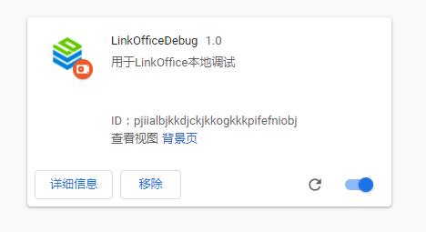
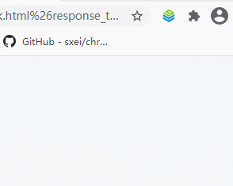
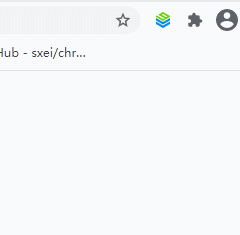
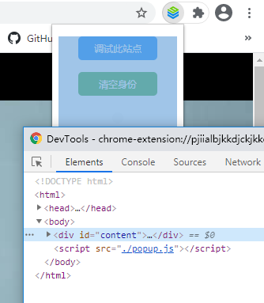
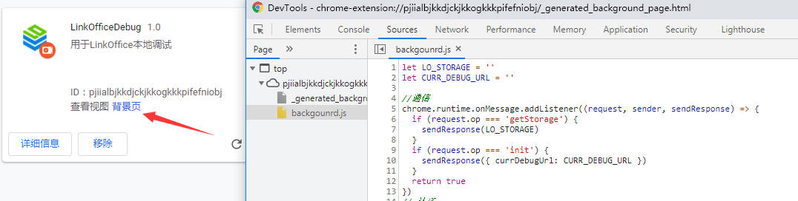

实现效果
关于插件的展示

成功记录站点信息 用于本地调试

当前站点为不可调试的站点

插件基础
文件目录
├── backgounrd.js
├── icon.png
├── lodebug.js
├── popup.html
├── popup.js
└── manifest.json
基础用法
mainfest.json
chrome插件的核心配置文件,用于声明版本信息和配置API功能的清单
| 属性 | 说明 |
|---|---|
| manifest_version | 配置文件版本 |
| name | 插件名称 |
| description | 鼠标滑过右上角小标提示信息 |
| icons | 图标 |
| browser_action | 定义右上角小标的滑出页面(popup窗) |
| background | 运行在 chrome 后台的脚本 |
| content_scripts | 注入访问网页的脚本 |
| permissions | 允许调用的API功能 |
1 | { |
popup.html
html+css即可实现滑出窗(popup窗)的界面
可以用js调用后台脚本的方法
如:
直接调用
1 | let bg = chrome.extension.getBackgroundPage(); |
与后端通信接收返回值
1 | chrome.runtime.sendMessage({ op: 'init', }, function (response) { |
backgound.js
可以调用多种浏览器功能,如操作Cookie/改变页签/改变视窗
与popup页面通信的方式:
1 | chrome.runtime.onMessage.addListener((request, sender, sendResponse) => { |
参考资料
http://chrome.cenchy.com/index.html
http://open.chrome.360.cn/extension_dev/overview.html
https://www.w3cschool.cn/kesyi/kesyi-m5uo24rx.html
调试
前台页
通过[右键检查元素]直接调试

后台页
通过点击插件扩展中的[背景页]打开调试窗口
